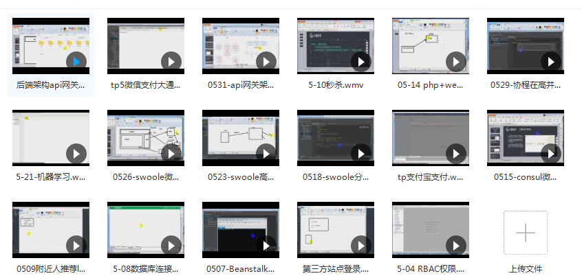

我们的项目如果跑在一台机器上，如果这台机器出现故障的话，或者用户请求量比较高，一台机器支撑不住的话。我们的网站可能就访问不了。那怎么解决呢？就需要使用多台机器，部署一样的程序，让几个机器同时的运行我们的网站。那怎么怎么分发请求的我们的所有机器上。所以负载均衡的概念就出现了。
负载均衡是指基于反向代理能将现在所有的请求根据指定的策略算法，分发到不同的服务器上。常用实现负载均衡的可以用nginx,lvs。但是现在也有个问题，如果负载均衡服务器出现问题了怎么办？所有冗余的概念就出现了。
冗余其实就是两个或者多台服务器 一个主服务器，一个从服务器。 假设一个主服务器的负载均衡服务器出现了问题，从服务器能够替代主服务器来继续负载均衡。实现的方式就是使用keepalive来抢占虚拟主机。
分布式其实就是将一个大项目的拆分出来，单独运行。
举个上面的例子。假设我们的访问量特别大。我们就可以做成分布式，跟cdn一样的机制。在北京，杭州，深圳三个地方都搭建一个一模一样的集群。离北京近的用户就访问北京的集群，离深圳近的就访问深圳这边的集群。这样就将我们网战给拆分3个区域了，各自独立。
再举个例子比如我们redis分布式。redis分布式是将redis中的数据分布到不同的服务器上面，每台服务器存储不同的内容，而mysql集群是每台服务器都放着一样的数据。这也就理解了分布式和集群的概念。
mysql master服务器会把sql操作日志写入到bin.log 日志里 slave服务器会去读master的bin.log 日志，然后执行sql语句。
主从有以下几个问题。
1.master服务器能写又能读，slave却只能写。
slave读取的数据还没有写入，这样该怎么解决呢？
1.假如缓存，从缓存中读取。
2.强制从master读取。
3.使用pxc集群，任何一个节点都是可读可写的，读写强一致性。
在config/database.php mysql配置块中将sticky设置为true
sticky 是一个 可选值，它可用于立即读取在当前请求周期内已写入数据库的记录。若 sticky 选项被启用，并且当前请求周期内执行过 「写」 操作，那么任何 「读」 操作都将使用 「写」 连接。这样可确保同一个请求周期内写入的数据可以被立即读取到，从而避免主从延迟导致数据不一致的问题。不过是否启用它，取决于应用程序的需求。

链接：https://pan.baidu.com/s/1v5gm7n0L7TGyejCmQrMh2g 提取码：x2p5
免费分享，但是X度限制严重，如若链接失效点击链接或搜索加群 群号518475424。
laravel为我们提供了扩展包laravel/envoy，它为定义远程服务器的日常任务，提供了一套简洁、轻量的语法。Blade 风格语法即可实现部署任务的配置、Artisan 命令的执行等。
composer global require laravel/envoy
Envoy 任务都应在项目根目录下的 Envoy.blade.php 中定义。写入一下内容
@servers(['web-1' => '192.168.1.1', 'web-2' => '192.168.1.2'])
@task('deploy', ['on' => ['web-1', 'web-2']])
cd site
git pull origin {{ $branch }}
composer update
php artisan migrate
@endtask
以上代码意思就是在命令行envoy run deploy时候，我们会ssh到会web-1,web-2 执行
cd site
git pull origin {{ $branch }}
php artisan migrate
当然这个前提是我们已经加入了ssh到远程的服务器上。